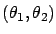
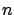
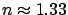

In free space, light travels along a path of shortest distance--which is of course a straight line. This is already a solution to a variational problem, albeit a very simple one. More interesting situations arise when a light ray encounters the edge of a medium. Two basic phenomena are reflection and refraction of light (see Figure 2.2).
In the case of reflection, Hero of Alexandria (who probably lived in the 1st century A.D.) suggested that light still takes the path of shortest distance among nearby paths. When the reflecting surface is a plane, one can argue using some simple geometry that the angles between the normal to this plane and the light ray before and after the reflection must then be the same. This result generalizes to curved reflecting surfaces, although proving it rigorously is not trivial (see Exercise 1.4 in the previous chapter).
Analyzing refraction is more challenging. Ptolemy made a list of angle pairs

corresponding to the situation depicted on the right in Figure 2.2. His list dates back to 140 A.D. and contains quite a few values. (This is ancient Greek experimental physics!) A pattern in Ptolemy's results was found only much later, in 1621, when Snell stated his law:
is the ratio of the speeds of light in the two media (
when light passes from air to water). A satisfactory explanation of this behavior was first given by Fermat around 1650. Fermat's principle states that, although the light does not take the path of shortest distance any more, it travels along the path of shortest time. Snell's law can be derived from Fermat's principle by differential calculus; in fact, this was one of the examples that Leibniz gave to illustrate the power of calculus in his original 1684 calculus monograph.The problems of light reflection and refraction are mentioned here mainly for historical reasons, and we do not proceed to mathematically formalize them. (However, we will revisit light reflection in Section 7.4.3.)